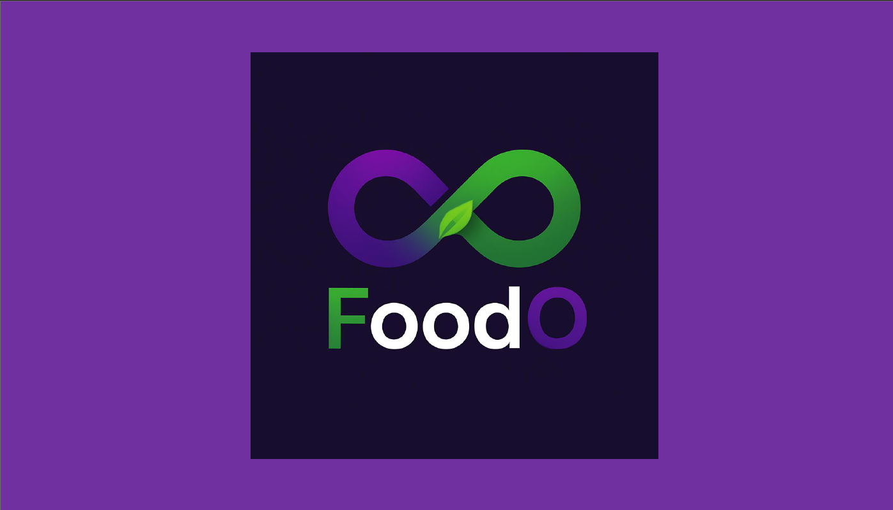
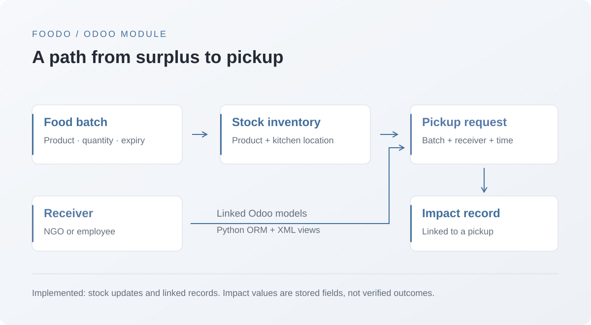

ERP DEVELOPMENT / FOOD REDISTRIBUTION
Foodo
An Odoo module connecting surplus-food batches to inventory, receivers, and scheduled pickups.
- Context
- ERP software project
- Project status
- Implemented module; dashboard planned
- Tools & methods
- Python · Odoo · PostgreSQL


- Platform
- Odoo 19
- Implementation
- Python ORM · XML views
- Integration
- Inventory · Sales · Website
Connecting food surplus to operations
Foodo is an Odoo module for organizing surplus-food redistribution. It connects food batches, inventory, receivers, and pickup requests inside the same ERP environment.
What is implemented
- Food batches store a linked product, quantity, edible/non-edible classification, expiry date, and kitchen location.
- Creating a batch updates the corresponding stock.quant record, or creates one for that product and location.
- Pickup requests connect a batch to a receiver, scheduled time, and handler.
- A scheduled method auto-confirms zero-value website orders in draft or sent state, processing at most 200 records per call.
FROM THE SOURCE
Automating zero-value orders
The domain selects free website orders that are ready to confirm. A bounded search limits each scheduled run.
domain = [
("amount_total", "=", 0.0),
("state", "in", ["draft", "sent"]),
("website_id", "!=", False),
]
orders = self.search(domain, limit=200)
for so in orders:
so.action_confirm()A linked data model
The impact model links each record to a pickup and stores meals saved, kilograms of waste avoided, and CO₂ saved. In the supplied code these are stored fields, not computed environmental outcomes.
The dashboard view is a basic batch kanban marked for future development. This showcase therefore focuses on the implemented workflow and data relationships, without claiming a completed impact analytics dashboard.